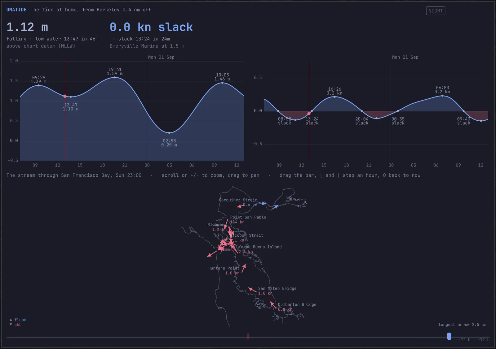
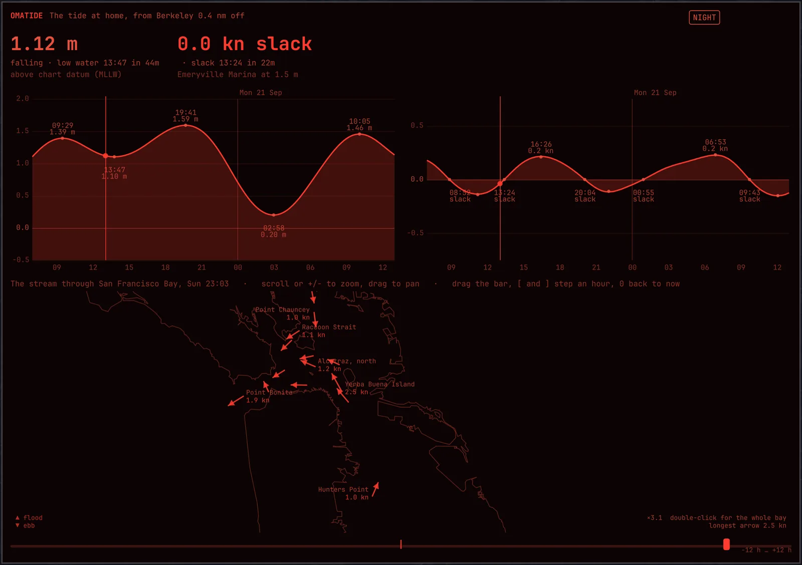

Tides and currentsearly · v0.1MIT
omatide
A tide is not fetched, it is predicted. NOAA measured the harmonic constants at each station over years; from them the height and the stream follow by arithmetic, for as far ahead as you like. omatide downloads those constants once and then works at sea, with the dish off, for years — the tide where the boat is, the stream where the boat is, and the whole of San Francisco Bay at any moment you drag it to.
What it does
- The tide where the boat is. The height above chart datum now, which way it is going, and the highs and lows to come, from the nearest of NOAA's stations to the fix omakeel reports. With no boat position at all it works from a home position you set; if the fix drops away it keeps using the last one it had.
- The stream where the boat is. Set and drift now, and the slacks and maximums to come — the thing that decides whether you leave at four or at six.
- San Francisco Bay, all of it. It carries every station NOAA has in the bay — 122 tide stations and 295 current bins — and draws the bay's narrows as the old tidal current chart: an arrow at each of 22 named places, over the bay's own shore, with the height at 13 more.
- Any hour of the day, at a drag. The bar under the map runs twelve hours either side of now, and [ and ] step it an hour. The answer is arithmetic, so it arrives as fast as you can drag — and
omatide bay --atwill do any moment at all, years out. - A bar widget with the height, which way it is going, and the next turn, for the Omarchy shell.
- Nothing to fetch again. One fetch of NOAA's catalog, a few minutes, about 380 KB of it kept on disk — and then no network for years.
The bay is not one tide
High water at the Golden Gate reaches Port Chicago an hour and three quarters later and a third of a meter lower. The stream that is slack off Alcatraz is still ebbing through Raccoon Strait, which turns before either of them. A table of one station cannot tell you that; a chart of the whole bay can.
A dozen of the bay's named places sit within two miles of Angel Island, so the map goes in: scroll or + and - to zoom, drag to pan, double-click for the whole bay. At about five times, every place in the central bay is named, with its speed, on a shore you can recognize. The view is kept over the bay, so the water under the arrows is never ocean.
The shore is a schematic, simplified from the OpenStreetMap coastline to about ninety meters: it is there to say which water an arrow is in. omahelm is the thing you navigate by.

How right it is
Checked against NOAA's own published tables, over seven years spread across the moon's 18.6-year nodal cycle. These are the measured worst errors against those tables; cargo test holds them to a looser bound on every commit — 3 mm, 0.4 cm/s, and ninety seconds at a turn — because a turn is flat and the minute either side rounds differently.
| What | Worst error against NOAA |
|---|---|
| Tide heights | 1.3 mm |
| High and low water | To the minute |
| Stream speed | 0.2 cm/s — four thousandths of a knot |
| Slack and maximum stream | To the minute |
Which is about the size of NOAA's own rounding: heights are published to the millimeter, and a current station's constants to a hundredth of a centimeter a second.
Written from scratch
The arithmetic is Schureman's, in Rust, with no tide library. Three things in it are worth knowing, because none of them is in the textbook, and each was worth a mistake:
- Schureman's epoch is 1900 January 1 at 0h, not the Julian Day 2415020.0 it is usually written as. Half a day is 6.6° of lunar motion, and getting it wrong costs 24 cm of tide.
- NOAA holds the node factors constant for a whole calendar year, worked out at mid-year. Varying them properly with time is a better model of the ocean and a worse match to the tables everyone actually reads.
- M1, L2, 2MK3, M3 and S1 do not take the nodal corrections the textbook gives them — and for S1 and M3 what is missing is a phase the tables leave out altogether. What NOAA uses is in the source, each one marked and each one checked across the nodal cycle.
Most of the places a sailor names — Red Rock, Point Blunt, Sausalito — are subordinate stations with no constants of their own, only offsets against one that has. omatide warps the reference station's own curve onto the subordinate's turns rather than replacing it with a plain cosine, which keeps the shallow-water lopsidedness that is everywhere in this bay.
On the chart, too
The same arrows draw over the chartplotter. Press s in omahelm and the stream comes on where you are actually looking, thinned so the arrows don't tangle, and the time bar drags the wind and the stream together. omahelm asks omatide for it over a socket; nothing about the tide lives in the chartplotter.
After dark

omatide takes its colors from the active Omarchy theme and redraws when you switch. n turns this one window red on black, curves and all, and leaves the rest of the desktop alone — the same key, and the same window's own choice, as in omahelm and omalookout.
Nothing in the window depends on color alone: an ebb arrow points the way it sets whatever the palette says, and a ring stands where there is no way to draw — slack water, or a bin NOAA publishes no direction for.
Keys
| Key | Does |
|---|---|
| [ ] | The bay an hour earlier, later; the bar under it drags |
| 0 | Back to now |
| + - | Zoom the bay; so does scrolling |
| Drag | Pan the bay; double-click for the whole of it |
| Hover | What that place is, and what to know about it |
| n | Night Watch |
| q, Escape | Close |
Install
Rust and the Omarchy shell. Build it, fetch the constants once, then open the window:
$ git clone https://github.com/shieldsworks/omatide ~/.local/share/omatide/src $ cd ~/.local/share/omatide/src $ cargo build --release --locked $ target/release/omatide fetch # NOAA's stations, once, a few minutes $ ./run.sh # the window
fetch writes about 380 KB to ~/.local/share/omatide/ and is the only thing that needs the network. scripts/link-plugin.sh puts the bar widget in the Omarchy shell. Which waters to carry, where home is with no GPS, and which bin down the water column to read are in ~/.config/omatide/config.toml; the README covers them.
There is a command line for all of it, which is how the predictions are checked:
$ target/release/omatide current 37.8663,-122.3148 $ target/release/omatide bay --at 2026-09-21T05:40:00Z
Not yet
- No sun or moon, so no rise, set or phase beside the tide.
- The drawn bay is San Francisco Bay. Tides and currents work at any NOAA station in the region you fetch; the current chart itself knows this one bay.
- No routes through the bay — no "leave at 09:20 and carry the flood to Benicia" yet.
- It has not been checked against a real tide gauge from the boat, only against NOAA's published predictions.